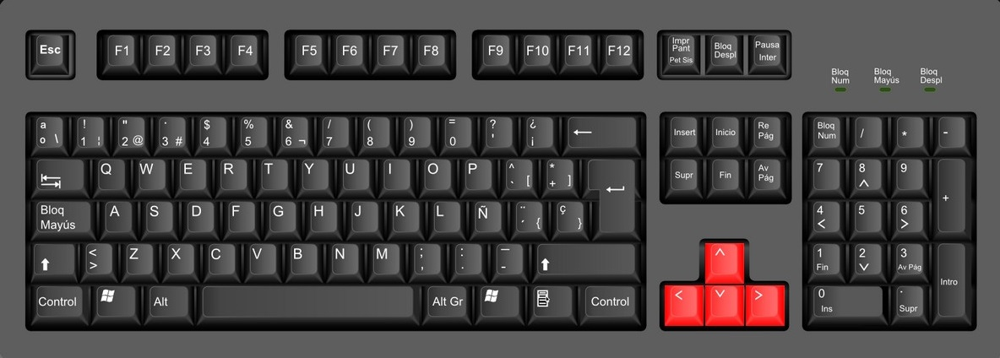
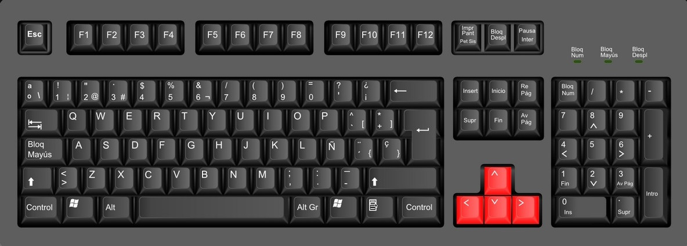

Pautas de juego
El jugador debe escoger el laberinto que desea desarrollar, una vez iniciada la partida se tomara el tiempo de juego.
Se debe hacer uso de las flechas del teclado para moverse a través del laberinto.
Una vez finalizada la partida, si se desea iniciar otra partida se debe oprimir el botón de -Escoger nuevo laberinto-.
 

Información adicional

Un laberinto es un pasatiempo gráfico consistente en trazar una línea desde un punto de origen situado en el exterior de un laberinto a uno de destino situado generalmente en el centro o bien en el lado opuesto. La dificultad consiste en encontrar un camino directo hasta el lugar deseado. El laberinto, por su propia configuración, contiene diferentes vías sin salida (de mayor o menor longitud) y solo un recorrido correcto.2Puede adoptar diferentes formas: cuadrado, ovalado, redondo, cuadrangular, etc.